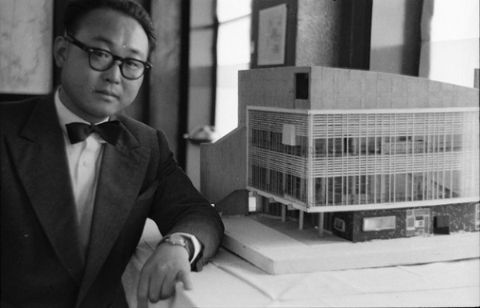

생애초기

평양 출신이며, 1939년 3월에 평양중학교를 졸업한 뒤 요코하마고등공업학교(현 요코하마국립대학) 건축학과에 진학하였다.
1941년 12월에 고등공업학교를 졸업한 뒤 마츠다·히라타 건축사무소에서 3년간 건축실무를 익혔다.
1944년에는 서울에 있는 조선주택영단 기수로서 일하였으며, 광복 직전인 1945년에는 안양에 있는 조선비행기제작주식회사에 근무하였다.
1947년 3월 서울대학교 공과대학 건축공학과 조교수가 되어 건축을 가르치며 시를 썼다.
1951년 1·4후퇴 때 부산으로 내려와 서울대학교 공과대학·사범대학, 한양공과대학·이화여자대학교·숙명여자대학교와 부산공업학교 등에서 강의를 하였다.